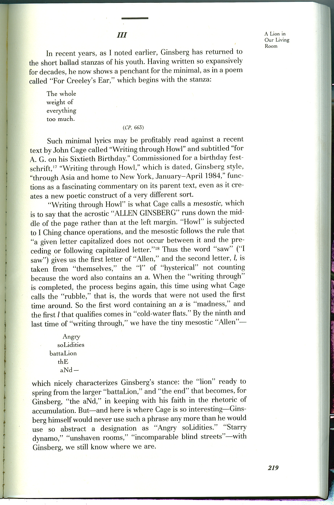
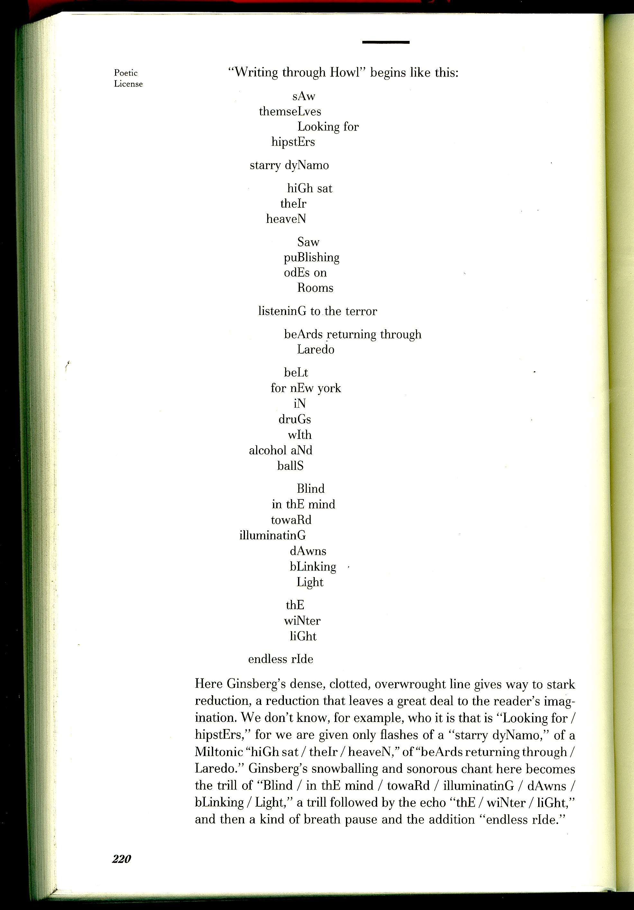
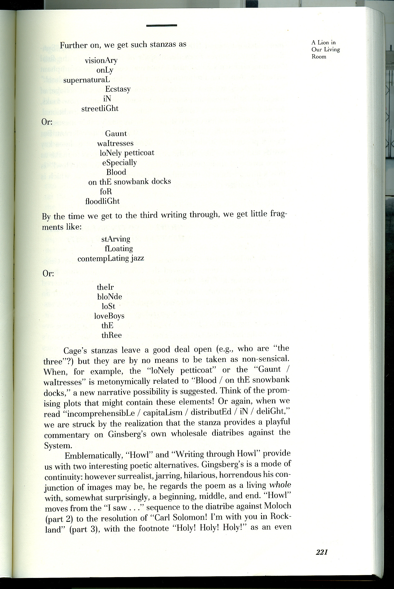
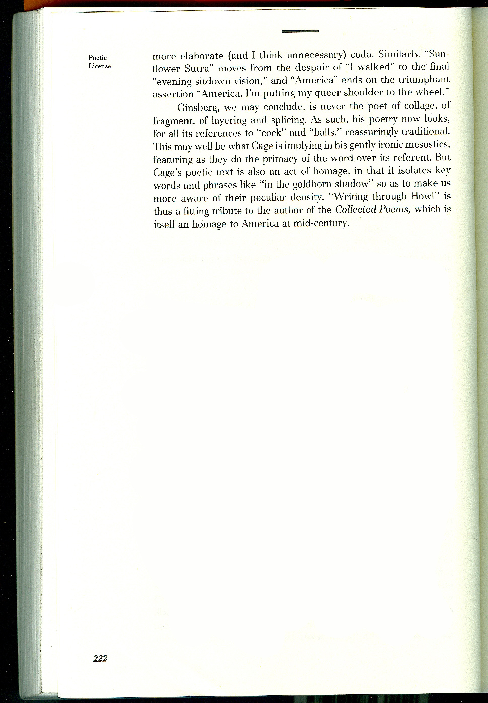
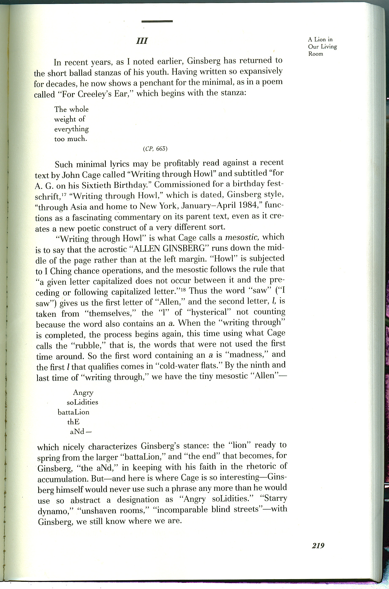
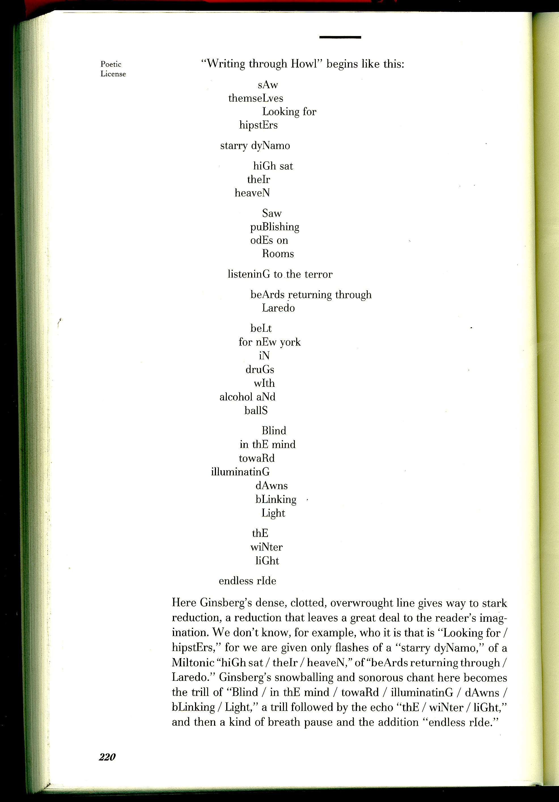
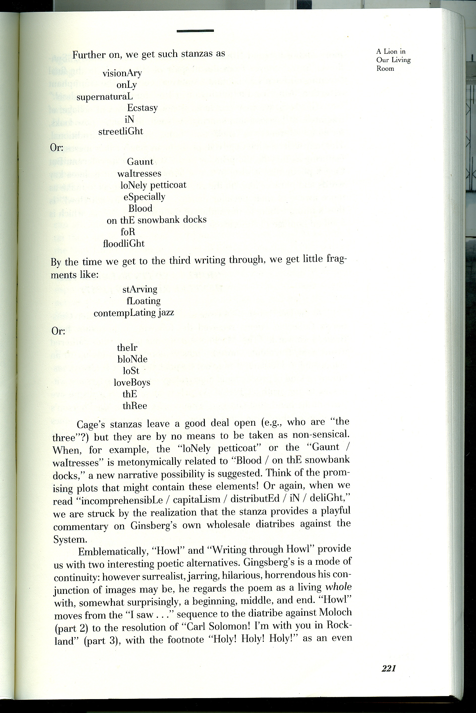
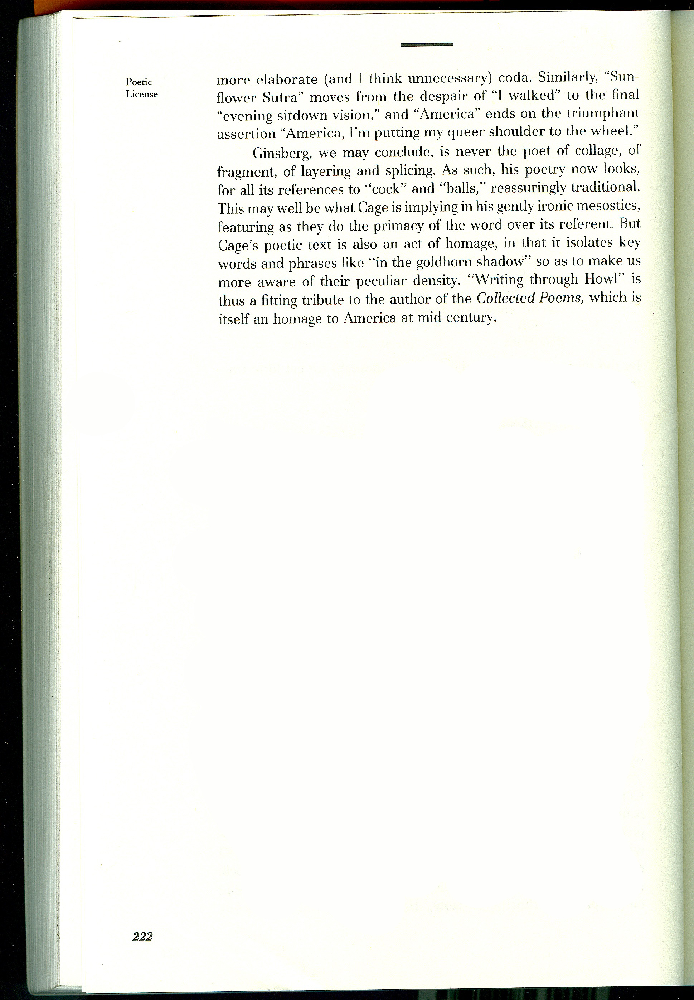

Marjorie Perloff on John Cage's "Writing through Howl" (1984) [Pages 219-222 of Perloff's Poetic License: Essays on Modernist and Postmodernist Lyric (Chicago: Northwestern University Press, 1990).]    
[Pages 219-222 of Perloff's Poetic License: Essays on Modernist and Postmodernist Lyric (Chicago: Northwestern University Press, 1990).]



